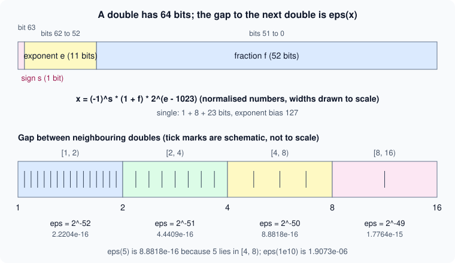

Numeric Types and Floating Point
|
This content was generated with the assistance of AI and should be verified against the official documentation before being relied on in production. |
Written against MATLAB R2026b. The sessions below were run in GNU Octave 11.3.0 (MATLAB code that Octave also accepts) and show Octave’s output; MATLAB’s layout can differ in spacing, in how a value such as pi is shown under format long, and in how integer and single results are labelled. Everything marked "not run here" (the isapprox function, hexadecimal literals, MATLAB error identifiers) was checked line by line against the R2026b documentation only.
Every value in MATLAB has a class, and numbers come in ten of them: two floating-point classes, double and single, and eight integer classes. The choice decides the range, the precision, the memory used and the class of every result computed from the value. This page covers the classes and their limits, the arithmetic rules between them, complex numbers, the special values Inf and NaN, comparison of floating-point values and the display format. Logical values (true and false) are on Logical Type and Conditions; text is on Strings and Character Arrays.
The numeric classes
By default MATLAB stores every number as a double-precision floating-point value, and you cannot change that default. x = 3 is a double. To store a value in another class you convert it with the class name used as a function: single(x), int8(x), uint16(x).
| Class | Storage | Range or precision | Created with |
|---|---|---|---|
|
8 bytes |
about 15 to 16 significant decimal digits, up to about 1.8e308 |
a literal such as |
|
4 bytes |
about 7 significant decimal digits, up to about 3.4e38 |
|
|
1 byte |
-128 to 127, and 0 to 255 |
|
|
2 bytes |
-32768 to 32767, and 0 to 65535 |
|
|
4 bytes |
about plus and minus 2.1e9, and 0 to about 4.3e9 |
|
|
8 bytes |
about plus and minus 9.2e18, and 0 to about 1.8e19 |
|
class(x) returns the name of the class as text; isa(x,"numeric"), isa(x,"integer") and isa(x,"float") test for a class or a family of classes; isnumeric, isfloat and isinteger do the same for the three families. Note that isnumeric(true) is false and isinteger(5) is false, because 5 is a double. All numeric classes support indexing, reshaping and the usual mathematical functions (with the exceptions described below); integer and single arrays use less memory than double ones.
The limits of each class are returned by functions, so you never type the constants:
-
intmin(typename)andintmax(typename)are the smallest and largest value of an integer class (intmaxalone is forint32). -
realmaxandrealminare the largest finite value and the smallest positive normalized value ofdouble;realmax("single")andrealmin("single")are thesingleversions. -
flintmaxis the largest consecutive integer of a floating-point class: every integer up to it is exactly representable, but its successor is not. -
eps(x)is the distance fromabs(x)to the next larger floating-point number of the same class (see the next section);epsalone iseps(1).
x = 3; class(x)
y = single(3); class(y)
k = int8(100); class(k)
intmin('int8'), intmax('int8'), intmax('uint8')
intmax('int64'), intmin('int64'), intmax('uint64')
realmax, realmin, realmax('single')
flintmax, flintmax('single')
eps, eps(1000), eps(single(1)), eps(1e10)Octave 11.3.0 output:
ans = double
ans = single
ans = int8
ans = -128
ans = 127
ans = 255
ans = 9223372036854775807
ans = -9223372036854775808
ans = 18446744073709551615
ans = 1.7977e+308
ans = 2.2251e-308
ans = 3.4028e+38
ans = 9.0072e+15
ans = 1.6777e+07
ans = 2.2204e-16
ans = 1.1369e-13
ans = 1.1921e-07
ans = 1.9073e-06Floating-point numbers and IEEE 754
double and single follow IEEE Standard 754 and use the rounding mode "round to nearest, ties to even". A floating-point number has the form (-1)^s * (1 + f) * 2^e, with a sign bit s, a fraction f (0 or more and less than 1) and an exponent e. A double spends 64 bits on this: 1 for the sign (bit 63), 11 for the exponent, biased by 1023 (bits 62 to 52), and 52 for the fraction (bits 51 to 0). A single spends 32: 1, 8 (bias 127) and 23.

Because only a finite set of numbers exists, most real numbers are rounded, and the distance between neighbours is not constant: it is eps(x), and it doubles each time x passes a power of two. The figure shows the gap growing from 2^-52 on [1, 2) to 2^-49 on [8, 16). Three consequences matter in practice:
-
Round-off.
4/3has no exact binary form, so1 - 3*(4/3 - 1)iseps(1)instead of 0, andsin(pi)is about 1.2e-16 becausepiis not exactly the real number pi. The documentation notes that these results are not bugs in MATLAB and occur in any software that uses floating-point numbers. -
Cancellation. Subtracting two nearly equal numbers leaves only the noise in their last bits.
eps(2^53)is 2, so2^53 + 1is rounded back to2^53, and(2^53 + 1) - 2^53is 0. -
Swamping. Adding numbers that differ by many orders of magnitude loses the small one:
1 + 1e-16is exactly 1.
flintmax is 2^53 for double and 2^24 for single. Above it only every second integer (then every fourth, and so on) can be stored, so converting a large integer to a floating-point class can change it. flintmax is smaller than the largest value of an integer class of the same width (2^53 against 2^64 - 1 for int64), so an int64 value above 2^53 converted with double loses accuracy.
0.1+0.2 == 0.3
fprintf('%.20f\n', 0.1)
fprintf('%.17g\n', 0.1+0.2)
abs(0.1+0.2-0.3) <= eps(0.3)
eps(0.3)
x = 2^53; x + 1 == x
x + 2 == x
sum(repmat(0.1,1,10)) == 1
1 + eps/2 == 1, 1 + eps == 1Octave 11.3.0 output:
ans = 0
0.10000000000000000555
0.30000000000000004
ans = 1
ans = 5.5511e-17
ans = 1
ans = 0
ans = 0
ans = 1
ans = 0fprintf with enough digits shows the stored value of 0.1 (0.1000000000000000055…), and why ten additions of 0.1 do not make exactly 1. sprintf("%.17g",x) gives the same text as a value, which is the way to see all the digits of a number whatever the display format.
Comparing floating-point values
== on floating-point values tests exact equality, so values that are equal mathematically often differ in the last bits (the first line of the session above). Compare with a tolerance:
-
an absolute tolerance,
abs(a-b) <= tol, when the values are near a known scale; -
a relative tolerance,
abs(a-b) <= tol*max(abs(a),abs(b)), or a multiple ofeps(x), otherwise; -
often both.
TF = isapprox(A,B) (since R2024b) applies a combined test, with default relative and absolute tolerances of 1e-15 (5e-7 if either input is single); isapprox(A,B,tol) takes the level "verytight", "tight", "loose" or "veryloose", and the name-value arguments RelativeTolerance and AbsoluteTolerance set the tolerances. NaN values are not approximately equal. isapprox is not run here (Octave 11.3.0 does not have it); for code that must run on an older release, write the explicit comparison. The details and an example are on Logical Type and Conditions.
Mixed-class comparison has a trap of its own. When one operand is single, the other is converted to single before the comparison, so a value that is not exactly representable in single can compare equal to its rounded copy:
fprintf('%.17g\n', double(single(0.1)));
single(0.1) == 0.1
double(single(0.1)) == 0.1
x = single(16777216); x + 1 == xOctave 11.3.0 output:
0.10000000149011612
ans = 1
ans = 0
ans = 1The single value nearest 0.1 is 0.10000000149011612 as a double, so the second line (comparison made in single) is true and the third (made in double) is false. The last line shows flintmax("single") at work: 16777216 plus 1 is rounded back to 16777216.
Integers: saturation and rounding
MATLAB has four signed and four unsigned integer classes, with 1, 2, 4 or 8 bytes of storage. Three rules define their arithmetic.
Conversion rounds to the nearest integer and saturates. A fractional value is rounded to the nearest integer, and a fraction of exactly one half is rounded to the integer larger in magnitude (int8(2.5) is 3 and int8(-2.5) is -3). A value outside the range becomes the nearest end of the range: int8(300) is 127, uint8(-5) is 0. NaN converts to 0 and Inf to the largest value. To use another rounding, apply round, fix, floor or ceil first.
Arithmetic saturates too. An integer result that is out of range does not wrap around; it stops at intmin or intmax of the class. int8(100) + int8(100) is 127 and uint8(5) - uint8(10) is 0. The documentation’s integer-arithmetic example uses this to find where a summed 8-bit signal saturates by comparing it with intmin and intmax.
The class of the operands decides the class of the result. Two integers of the same class give that class; an integer and a scalar double give the integer class (the documentation describes this for scalar doubles). The exact result is computed (in double precision, or as if in extended precision for a 64-bit integer array with a scalar double) and then rounded and saturated to the integer class. Two different integer classes cannot be combined arithmetically, and complex numbers are not supported with integer classes.
a = int8(100) + int8(100)
b = int8(-100) - int8(100)
c = uint8(5) - uint8(10)
d = int8(7) / int8(2)
e = int8([2.5 3.5 -2.5 -3.5])
f = int32(10) * 2.6
class(f)
try, int8(1) + int16(1), catch err, disp(err.message), end
i1 = idivide(int32(7), int32(2))
i2 = idivide(int32(7), int32(2), 'floor')
int16(200) * int16(200)
int32(NaN)
int8(Inf), int8(-Inf)Octave 11.3.0 output (a few lines are shortened to the value):
a = 127
b = -128
c = 0
d = 4
e =
3 4 -3 -4
f = 26
ans = int32
binary operator '+' not implemented for 'int8 scalar' by 'int16 scalar' operations
i1 = 3
i2 = 3
ans = 32767
ans = 0
ans = 127
ans = -128The error text for mixed integer classes is Octave’s; MATLAB raises an error for the same expression, with its own wording and identifier (not run here).
Integer division with / rounds the exact quotient to the nearest integer (int8(7)/int8(2) is 4). C = idivide(A,B,opt) divides integers with the rounding of your choice: opt is "fix" (the default, toward zero), "floor", "ceil" or "round". At least one operand must be an integer class, and with a scalar double operand the integer operand cannot be int64 or uint64.
Source: MATLAB documentation: Integers, MATLAB documentation: Integer Arithmetic, MATLAB documentation: idivide
Why integer types are rarely needed
The default double covers most computations with enough precision, handles NaN and Inf, mixes freely with every function, and does not saturate. Integers are the right choice when the data is integer in nature and large (images as uint8, raw samples from a converter as int16), when memory or file size matters, when you must interface with an API or file format that wants a specific type, or when you need bit operations (bitand, bitshift, bitor). Their drawbacks are the saturation above and a smaller set of supported functions; many functions return double or reject integer input. Do not store ordinary loop counters or sizes as integers: for k = 1:n is a double loop and that is fine.
A heatflow example: the thermocouple amplifier delivers raw 16-bit counts, stored as uint16. Convert to double before scaling, because arithmetic on the integer class saturates. The calibration constants below are placeholders.
counts = uint16([8200 8350 65535 0 8420]);
T = 0.01*double(counts) - 40
class(counts*2)
counts*100Octave 11.3.0 output:
T =
42.000 43.500 615.350 -40.000 44.200
ans = uint16
ans =
65535 65535 65535 0 65535The scaled double is exact enough; counts*100 stays uint16 and every element above 655 is clipped to 65535, silently. The count 65535 (a full-scale reading) also shows how a sentinel value can masquerade as data: check for it before converting.
The class of mixed operations
| Operands | Result of arithmetic | Result of concatenation with [ ] |
|---|---|---|
|
|
|
|
|
|
integer and |
the integer class |
the integer class |
integer and a different integer class |
error |
the class of the leftmost integer; values saturate |
|
|
|
|
|
|
For concatenation the documentation states that when integers are combined with double, single or logical data, all elements take the class of the leftmost integer. The result is therefore an integer even when a double comes first, and the converted values are rounded and saturated. The last row of the table is the surprise: ['a' 66] is the text aB.
a = [int8(1) 2.7]; class(a), a
b = [2.7 int8(1)]; class(b), b
c = [int8(100) int16(1000)]; class(c), c
d = [single(1) 2]; class(d)
e = [int16(1) single(2.5)]; class(e)
f = [true 2]; class(f)
class(single(1)+1), class(single(1)*int8(2))Octave 11.3.0 output:
ans = int8
a =
1 3
ans = int8
b =
3 1
ans = int8
c =
100 127
ans = single
ans = int16
ans = double
ans = single
ans = int8Single precision
single(x) halves the memory of a double array, and zeros(n,1,"single") and ones(n,1,"single") create single arrays directly. Operations on single data are computed in single precision, and the result of single with double is single. single has about 7 decimal digits, so eps(single(1)) is 1.1921e-07 and flintmax("single") is 16777216; use it for large arrays where that accuracy is enough, or when a library or hardware wants it, not as a default.
p = zeros(1000,1000); q = zeros(1000,1000,'single');
whos p q
alpha = 1.1e-4; dx = 0.01;
dtmax = dx^2/(4*alpha)
dtmax_s = single(dx)^2/(4*single(alpha));
class(dtmax_s)
fprintf('%.10g %.10g\n', dtmax, double(dtmax_s));Octave 11.3.0 output (the whos layout differs in MATLAB; the sizes are the point):
Attr Name Size Bytes Class
==== ==== ==== ===== =====
p 1000x1000 8000000 double
q 1000x1000 4000000 single
ans = single
0.2272727273 0.2272727191The heatflow time-step limit dt <= dx^2/(4*alpha) evaluates to about 0.2273 in either class; the two agree to about 8 digits. For the temperature matrix of a large plate, single halves the 8 MB of the double field to 4 MB, at the cost of that precision.
Complex numbers
The imaginary unit is written i or j (the numeric constants, valid as a suffix: 3+4i), or 1i and 1j, which are safe even if a variable named i exists (see Syntax, Statements and Variables). complex(a,b) builds a + bi from two real inputs, and is the only way to make a complex value with a zero imaginary part, or one of an integer class, since an expression such as 3+0i is simplified to the real 3. For x real, complex(x) is x + 0i with isreal false.
-
real(z),imag(z),abs(z)(the magnitude),angle(z)(the phase in radians) andconj(z)take a complex number apart. -
isreal(z)is true only if the array has no imaginary part stored; useisrealto test storage, and~any(imag(z))orall(imag(z)==0)to test the values. -
The transpose operator
'is the conjugate transpose and.'is the plain transpose; for complex data the difference is a classic bug (see Matrices and Arrays). -
Functions such as
sqrt,logand powers return complex results where a real result does not exist:sqrt(-4)is0 + 2i, and(-8)^(1/3)is the principal complex root, not -2.
z = 3 + 4i
real(z), imag(z), abs(z), angle(z), conj(z)
isreal(z), isreal(complex(3,0)), isreal(3+0i)
sqrt(-4)
A = [1+2i 3-1i]; A', A.'
(1+2i)*(3-1i)
roots([1 0 1])Octave 11.3.0 output:
z = 3 + 4i
ans = 3
ans = 4
ans = 5
ans = 0.9273
ans = 3 - 4i
ans = 0
ans = 0
ans = 1
ans = 0 + 2i
ans =
1 - 2i
3 + 1i
ans =
1 + 2i
3 - 1i
ans = 5 + 5i
ans =
0 + 1i
0 - 1iOctave shows complex values with a space after the equals sign and no rounding to four decimals when the parts are integers; MATLAB’s layout differs (it shows z = 3.0000 + 4.0000i for non-integer data), but the values agree. roots([1 0 1]), the roots of x^2 + 1, are the pair 0 + 1i and 0 - 1i. Operations on complex numbers are done in floating-point arithmetic: exp(1i*pi) is not exactly -1 but has an imaginary part of about 1.2246e-16.
Infinity and NaN
Inf is the IEEE positive infinity, produced by division by a zero, overflow and log(0) (which is -Inf); -Inf is the negative one. NaN ("not a number") is produced by operations with no defined result: 0/0, Inf - Inf, Inf*0. The functions Inf and NaN also create arrays (NaN(3), Inf(2,"single"), NaN(2,3)), and isinf, isnan and isfinite test arrays. A number above realmax overflows to Inf, and below realmin the value becomes subnormal and loses digits until it underflows to 0.
NaN propagates: any arithmetic with a NaN yields NaN, so one missing reading spoils a sum or mean. Every comparison with NaN is false except ~=; NaN == NaN is false, and the way to test is isnan(x), never x == NaN. isequal(NaN,NaN) is false and isequaln(NaN,NaN) is true. max and min skip NaN values.
1/0, -1/0, 0/0
Inf - Inf, Inf * 0, Inf + 1
NaN == NaN, isnan(NaN), isinf([1 Inf -Inf NaN])
max([1 NaN 3]), sum([1 NaN 3]), NaN + 5
isequal(NaN, NaN), isequaln(NaN, NaN)
Tm = [21.4 21.6 NaN 21.9 NaN 22.3];
mean(Tm), mean(Tm, 'omitnan'), nnz(isnan(Tm))
Tm(~isnan(Tm))Octave 11.3.0 output:
ans = Inf
ans = -Inf
ans = NaN
ans = NaN
ans = NaN
ans = Inf
ans = 0
ans = 1
ans =
0 1 1 0
ans = 3
ans = NaN
ans = NaN
ans = 0
ans = 1
ans = NaN
ans = 21.800
ans = 2
ans =
21.400 21.600 21.900 22.300The thermocouple log of the heatflow scenario has deliberate gaps, which come in as NaN: mean(Tm) is NaN, while mean(Tm,"omitnan") averages the four readings that exist. Handling missing data, including NaN in tables, is on Missing Data. Converting NaN to an integer class gives 0, which hides the gap; convert only after removing or flagging the missing values.
Converting: class, cast and typecast
-
className = class(obj)returns the class name. -
B = cast(A,newtype)converts the value to the classnewtypewith the conversion rules above: rounding to nearest (half away from zero) for floating-point to integer, saturation for out-of-range values.B = cast(A,like=p)converts to the class and sparsity of the prototypep.cast(3.7,"int8")isint8(4). -
Y = typecast(X,newtype)reinterprets the bit pattern ofXasnewtypewithout changing the data;Xmust be a full vector or scalar.typecast(int16(-1),"uint16")is 65535, with the same bits;typecast(single(1),"uint32")is 1065353216, the bit pattern of 1.0 insingle; a vector of fouruint8becomes oneuint32(orsingle), so the length changes. The byte order of the machine matters.typecast(X,like=p)exists since R2024b. -
The conversion functions (
double,single,int8, …) also convert text (double("A")is 65) and logical values. A hexadecimal or binary literal (0xFF,0b101) is an integer; the documentation topic on numeric types covers them. Not run here. -
dec2bin,dec2hex,hex2decandbitand/bitor/bitshiftwork on the bits of integers.
cast(3.7,'int8'), class(cast(3.7,'int8'))
x = single(1); typecast(x,'uint32')
dec2bin(typecast(single(1),'uint32'))
typecast(uint8([1 0 0 0]),'uint32')
typecast(uint8([0 0 128 63]),'single')
uint8(300), uint8(-5), uint8(3.5), uint8(2.5)
isa(5,'numeric'), isa(int8(5),'integer'), isa(single(1),'float')
isnumeric(true), isfloat(single(1)), isinteger(5)
dec2hex(255), hex2dec('FF'), bitand(uint8(12), uint8(10))Octave 11.3.0 output:
ans = 4
ans = int8
ans = 1065353216
ans = 111111100000000000000000000000
ans = 1
ans = 1
ans = 255
ans = 0
ans = 4
ans = 3
ans = 1
ans = 1
ans = 1
ans = 0
ans = 1
ans = 0
ans = FF
ans = 255
ans = 8The byte pattern 0 0 128 63 is little-endian for 1.0 in single, which is why the last typecast returns 1 on a little-endian machine.
Display format
The display format changes how numbers are shown, not how they are stored. The default format short shows 5 significant digits (3.1416). format(style) or the command form format style sets the style for the session; the preferences under Settings, Command Window, Numeric format set it for later sessions. fmt = format returns the current format.
| Style | Result | pi shown as |
|---|---|---|
|
fixed decimal, 4 digits after the point |
|
|
fixed decimal, 15 digits after the point for |
|
|
scientific notation, 4 or 15 digits after the point |
|
|
fixed or scientific, whichever is more compact, with 5 or 15 total digits |
|
|
engineering notation (exponent a multiple of 3) |
|
|
currency, 2 digits after the point |
|
|
the hexadecimal form of the double-precision bit pattern |
|
|
a ratio of small integers |
|
|
plus sign, minus sign or blank for positive, negative or zero |
|
The table summarizes the documentation. format long is the quickest way to see that a value is not what you typed, and format hex shows the bit pattern (the same one typecast exposes). A matrix with a wide range of magnitudes is shown with a common scale factor or in scientific notation. format alone restores short. Use disp, fprintf, sprintf or compose when the output layout must be exact (see Strings and Character Arrays).
x = pi*1000;
format short, x
format long, x
format shortG, x
format shortE, x
format
single(pi)
format long, single(pi), pi
format shortOctave 11.3.0 output (MATLAB shows x under format long in scientific notation, 3.141592653589793e+03, so the layouts differ):
x = 3141.6
x = 3141.592653589793
x = 3141.6
x = 3.1416e+03
ans = 3.1416
ans = 3.1415927
ans = 3.141592653589793Pitfalls
| Pitfall | What to do |
|---|---|
|
Compare with a tolerance or |
|
Use |
One |
Use the |
Integer arithmetic saturates silently |
Convert to |
|
Use a signed class or |
|
Convert both to one class first. |
|
Handle missing and infinite values before converting. |
|
The comparison is made in |
Integers above |
Keep 64-bit identifiers in |
|
Use |
|
|
|
The display format only affects display; |
|
Concatenation converts to a class by the rules above; convert explicitly before combining. |
Where older books differ
The older books treat double as the only number type, introduce int8 to uint64 and single briefly, and often show results of integer arithmetic without the rule that mixed integer classes are an error. They predate several functions on this page: isapprox (R2024b) for comparison with a tolerance, the like= syntax of typecast (R2024b), and the "omitnan" option of the statistics functions. They use i and j freely as the imaginary unit even though loops use them as variable names. The floating-point rules themselves (IEEE 754, eps, realmax) have not changed.